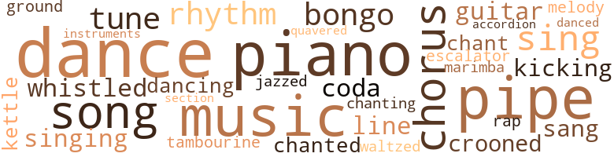
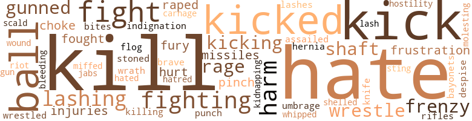
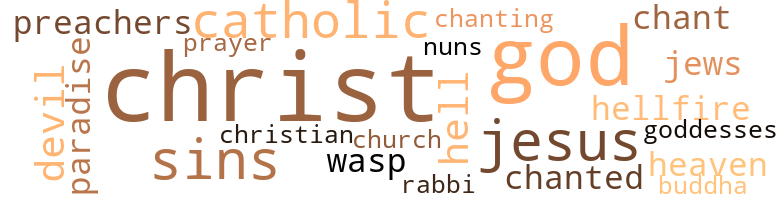

Nothing Black But a Cadillac, by Spence, Raymond (1969)
116 music-related terms matched in this text.
Most frequent terms in this topic: dance (14); piano (13); pipe (12); music (11); chorus (6)
accordion.n.01
Definition: a portable box-shaped free-reed instrument; the reeds are made to vibrate by air from the bellows controlled by the player
| word | sentence |
|---|---|
| accordion | Somehow her pleasure-dulled brain caught on to what I was after , and down she came with the other stud behind her all the way , his knees folding on my stomach like a dropped accordion . |
bongo.n.01
Definition: a small drum; played with the hands
| word | sentence |
|---|---|
| Bongos | Bongos and stuff . |
| bongo | She switched on a radio , and bongo music be - gan fighting its way out from under a blanket of strings . |
| bongos | Six years of university were n't unreasonable except that I had to learn native dancing to stop my toenails from turning blue with the cold , and when I finally got my second sheep - skin in English literature , I considered myself a pretty con - summate savage - I was the fastest halfback in a bush league that made my native haunts look clear as a prairie ; I could play bongos ; I could dance and sing , and any woman within range of my piercing eyes quavered with the strength of my libido . |
chant.n.01
Definition: a repetitive song in which as many syllables as necessary are assigned to a single tone
| word | sentence |
|---|---|
| chants | When I left , he was practicing ritual chants and tossing glasses at the head bartender . " |
| chant | I was immersed into eager femininity , and once she got her finger out of my mouth , my girl began the ancient love chant of the berserk female . |
chorus.n.01
Definition: any utterance produced simultaneously by a group
| word | sentence |
|---|---|
| chorus | A chorus of squeaks fluttered up from the piano , as the fruits and the dykes twittered their approval , along with their fear that things might get out of hand . |
| chorus | Harold joined in with a nicely inverted fifth line , and we got off one fine chorus at a pretty good tempo . |
| chorus | Hank and Harold started in on " Rock of Ages , " but their harmony was a little off at first , and it took them a chorus to get it properly balanced . |
| chorus | Peel it olfl " A chorus of cries echoed this re - quest . |
| chorus | Between every chorus they would stop , lash their tails , raise their right paws , and meow in chorus . |
| chorus | Between every chorus they would stop , lash their tails , raise their right paws , and meow in chorus . |
croon.v.01
Definition: sing softly
| word | sentence |
|---|---|
| crooned | " You got any money on you , baby ? " he crooned to the drunk . |
| crooned | " Coin ' to get me some knob , baby , yeah ! " she crooned softly . |
dance.n.01
Definition: an artistic form of nonverbal communication
| word | sentence |
|---|---|
| dance | She obviously had lost none of her old skills , and now that she had a centering device she was capable of quite a dance . |
| dance | " I play drums , " I said , " and dance . " |
| dance | " Probably want me to do a dance . " |
| dance | " Let 's dance , " my girl urged . |
| dance | " What Sam should learn to do , " I said , " is dance . " |
| dances | " Each night ve haff made such goot dances that some of them haff gone all the vay across the U.S.A. and right on into Europe . |
| dance | For those off you in the audience who haff not been here before , the Chim Dandy is a dance ve gave birth to last year . |
| dance | " But for tonight , a new dance ! |
| dance | So , the dance . " |
dance.n.02
Definition: a party of people assembled for dancing
| word | sentence |
|---|---|
| dance | We toppled down the wide marble stairs like an amateur dance team standing in at the Ziegfeld Follies . |
| Dance | " Dance my friends ! |
dance.v.03
Definition: skip, leap, or move up and down or sideways
| word | sentence |
|---|---|
| dance | " We 're going to dance , we going to sing ! |
| dance | Do you want me to dance or not ? " |
| dancing | I followed my hand down , and together we traipsed across her heaving belly like two kids dancing across the schoolyard . |
| dance | " Feel free to dance , drink , any - thing you desire , but no lying on the floor , please . " |
| dance | She slowed down her twitching and started to dance beside him as a girl should . |
| danced | My girl danced around a bucket of Crisco , rubbing her bum against it during her athletic gyrations . |
| dancing | Big , buck blacks went by , skinny knees dancing out in all directions , polyrhythmically promising indefatigable stud - ding . |
| dance | Six years of university were n't unreasonable except that I had to learn native dancing to stop my toenails from turning blue with the cold , and when I finally got my second sheep - skin in English literature , I considered myself a pretty con - summate savage - I was the fastest halfback in a bush league that made my native haunts look clear as a prairie ; I could play bongos ; I could dance and sing , and any woman within range of my piercing eyes quavered with the strength of my libido . |
escalator_clause.n.01
Definition: a clause in a contract that provides for an increase or a decrease in wages or prices or benefits etc. depending on certain conditions (as a change in the cost of living index)
| word | sentence |
|---|---|
| escalator | " That 's like trying to grab a snooze on an escalator , " I grumbled , but I fell onto her slippery warm midriff . |
finale.n.01
Definition: the closing section of a musical composition
| word | sentence |
|---|---|
| coda | I whacked the table with a fast coda , and Dr. Bennett al - most swallowed his pipe while he clapped . |
| coda | The bell on the other car added another two bars , and they swung into the coda together as they passed . |
grind.v.04
Definition: dance by rotating the pelvis in an erotically suggestive way, often while in contact with one's partner such that the dancers' legs are interlaced
| word | sentence |
|---|---|
| ground | She ground herself into Dicky 's face , her hips moving up and down like a lazy manta ray . |
guitar.n.01
Definition: a stringed instrument usually having six strings; played by strumming or plucking
| word | sentence |
|---|---|
| guitar | " Belt the guitar some , too . " |
| guitars | The band , dressed in furry , mauve angora kitty costumes and long pink hair , slammed their guitars against their bel - lies and slapped their paws on the strings . |
jazz.v.01
Definition: play something in the style of jazz
| word | sentence |
|---|---|
| jazzed | Sam released his levers and jazzed the changing light . |
kettle.n.04
Definition: a large hemispherical brass or copper percussion instrument with a drumhead that can be tuned by adjusting the tension on it
| word | sentence |
|---|---|
| kettle | " Will you hold the kettle while I make the fire ? " |
| kettle | He drank half the kettle before he poured . " |
kick.v.04
Definition: kick a leg up
| word | sentence |
|---|---|
| kicking | " Father have whole herds kicking at hut . |
| kicking | She landed in a soggy cardboard box and lay there , kicking and screaming . |
marimba.n.01
Definition: a percussion instrument with wooden bars tuned to produce a chromatic scale and with resonators; played with small mallets
| word | sentence |
|---|---|
| marimba | Sam , our brakeman and guide , rvhooped joyously and sounded a series of intricate marimba rhythms on his little bell . |
music.n.01
Definition: an artistic form of auditory communication incorporating instrumental or vocal tones in a structured and continuous manner
| word | sentence |
|---|---|
| music | She started buttoning her blouse , humming along to the music on the car radio . |
| music | " Over there where the music is coming from . |
| music | " You play music ? " |
| music | You got any music ? " |
| music | She switched on a radio , and bongo music be - gan fighting its way out from under a blanket of strings . |
| music | " That 's your sort of music , is n't it ? " she asked and slid over to the center of the seat where she could hear better . |
| music | Through it all the stri - dent music screamed away . |
| music | Blasts in your ears and grabs your jointl Now that 's music ! " |
| music | What say , music man ? " he addressed Jacob . |
| music | Cacophonous music and hot , sweaty , eager bodies barking their shins on Jack the Ripper 's Beanstalk ! " |
| music | Let us haff music ! " |
musical_instrument.n.01
Definition: any of various devices or contrivances that can be used to produce musical tones or sounds
| word | sentence |
|---|---|
| instruments | He had si - lenced the Copernicans , who leaned on their instruments like triumphant , if weary , Roman soldiers . |
piano.n.01
Definition: a keyboard instrument that is played by depressing keys that cause hammers to strike tuned strings and produce sounds
| word | sentence |
|---|---|
| piano | He walked past a piano in the middle of the room and said a few words to the pianist . |
| piano | Immediately the piano switched from a smooth rumble about the West Side Story to a happy , syncopated interpreta - tion of West Indian high jinks . |
| piano | What about the piano ? |
| piano | Dr. Bennett got up and led the way to the piano bar . |
| piano | Luckily , I had my hands on the piano and , by bracing myself , managed to avoid being knocked on my face . |
| piano | " That 's pretty funny , " she hooted , " but you ai n't got the problems you think you havel " She slammed the piano , upsetting the pian - ist 's arpeggios along with a couple of drinks . |
| piano | A chorus of squeaks fluttered up from the piano , as the fruits and the dykes twittered their approval , along with their fear that things might get out of hand . |
| piano | The squeals began flut - tering around the piano again , and even I began to get nerv - ous . |
| piano | Dr. Bennett looked at all the money piling up on the piano top , where all the pretty little hands had laid it . |
| piano | " You want it on the piano or the floor ? " she demanded . |
| piano | I sat down by the piano with him . |
| piano | I put the money on the piano . |
| piano | She pranced thoughtfully around me , her purple under - wear dancing with her flesh like an allegro player piano . |
pipe.n.04
Definition: a tubular wind instrument
| word | sentence |
|---|---|
| pipe | He hunched his chair closer and relit his pipe . |
| pipe | I whacked the table with a fast coda , and Dr. Bennett al - most swallowed his pipe while he clapped . |
| pipe | Dr. Bennett relit his pipe , and I paid some attention to the moored boats across the road . |
| pipe | Dr. Bennett attempted to swallow his pipe . |
| pipe | Dr. Bennett filled his pipe excitedly . |
| pipe | Dr. Bennett took the pipe out of his mouth worriedly . |
| pipe | Dr. Bennett tapped his pipe . |
| pipe | " Why do you smoke your pipe upside down ? |
| pipe | " Bugger off or I 'll stuff the goddamned pipe up your black ass . " |
| pipe | The pipe , curling smoke derisively , poked at my bestial midriff . |
| pipe | Sister took her pipe out and tapped it on her taut thigh . |
| pipe | She stuck her pipe into her lavender shorts and stalked off . |
rap.n.05
Definition: genre of African-American music of the 1980s and 1990s in which rhyming lyrics are chanted to a musical accompaniment; several forms of rap have emerged
| word | sentence |
|---|---|
| rap | One hip thrown out so 's yoh can put yoh hand on it and rap yoh fin - gehs on yoh meat and let him know yoh not only know what yoh 's doing , hut 'll shake him up like he nevah been shook befoah ! |
rhythm.n.04
Definition: the arrangement of spoken words alternating stressed and unstressed elements
| word | sentence |
|---|---|
| rhythm | " You just got to have rhythm , " I offered as Rosie handed me my pants . |
| rhythms | Sam , our brakeman and guide , rvhooped joyously and sounded a series of intricate marimba rhythms on his little bell . |
| rhythm | " Let 's get some rhythm in heah . " |
section.n.01
Definition: a self-contained part of a larger composition (written or musical)
| word | sentence |
|---|---|
| section | I did n't know what the laws were in this section of town , but I was reasonably certain Art was breaking several of them . |
sing.v.02
Definition: produce tones with the voice
| word | sentence |
|---|---|
| Sing | " Sing it out , sister ! " |
| sing | " We 're going to dance , we going to sing ! |
| sang | She sang in French as she worked . |
| sang | When it 's all sliiny and bright , Jacob sang . |
| sing | Six years of university were n't unreasonable except that I had to learn native dancing to stop my toenails from turning blue with the cold , and when I finally got my second sheep - skin in English literature , I considered myself a pretty con - summate savage - I was the fastest halfback in a bush league that made my native haunts look clear as a prairie ; I could play bongos ; I could dance and sing , and any woman within range of my piercing eyes quavered with the strength of my libido . |
| Sing | " Sing away , lil Redknob ! " |
singing.n.01
Definition: the act of singing vocal music
| word | sentence |
|---|---|
| singing | Charlotte liked the song I was singing . |
| singing | Probably singing second alto some - wheres . |
song.n.01
Definition: a short musical composition with words
| word | sentence |
|---|---|
| song | Charlotte liked the song I was singing . |
| song | She burst into song . |
| song | You going to give us a song ? '' |
| songs | It 's not much , but we 'll have a few songs and a couple of brave , rousing cheers before the dreaded end . " |
| song | What more can you ask from a song ? " |
| songs | " Them songs for old age . |
| song | " We got to go through the song first , " Jacob explained to me . |
tambourine.n.01
Definition: a shallow drum with a single drumhead and with metallic disks in the sides
| word | sentence |
|---|---|
| tambourine | " All we need 's a tambourine , " I said and clinked glasses with the other two studs . |
tone.v.01
Definition: utter monotonously and repetitively and rhythmically
| word | sentence |
|---|---|
| chanting | I backed away as the shell roared and Jimmy waded into a large cloud of robin 's - egg blue , clutching his throat and chanting hoarsely . |
| chanted | I got you ! " she chanted . |
| chanted | " Let 's see yoh green , " Gloria chanted . |
tune.n.01
Definition: a succession of notes forming a distinctive sequence
| word | sentence |
|---|---|
| tune | He possessed a beautiful , fake English ac - cent which reminded me of my educational background and lessons taught to the tune of a twisted tongue , but he seemed to enjoy it so much it was hard to take umbrage . |
| line | I emerged a dozen feet away from the dock and was swept along toward a line of boats . |
| line | Harold joined in with a nicely inverted fifth line , and we got off one fine chorus at a pretty good tempo . |
| melody | I let Harold carry the melody for a time while Hank super - imposed upper thirds and fifths which were n't bad at all . |
| tune | Somebody clubbed the jukebox into submission with a quarter and got a slow lugubrious tune out of it . |
| tune | " It was designed to put us back into tune with our ances - tors , " Sam said . |
waltz.v.01
Definition: dance a waltz
| word | sentence |
|---|---|
| waltzed | " Any time you 're ready ! " she cried , waltzed across my belly , and took Sam in a bound that spilled some of the liq - uor from her glasses onto his face . |
warble.v.01
Definition: sing or play with trills, alternating with the half note above or below
| word | sentence |
|---|---|
| quavered | Six years of university were n't unreasonable except that I had to learn native dancing to stop my toenails from turning blue with the cold , and when I finally got my second sheep - skin in English literature , I considered myself a pretty con - summate savage - I was the fastest halfback in a bush league that made my native haunts look clear as a prairie ; I could play bongos ; I could dance and sing , and any woman within range of my piercing eyes quavered with the strength of my libido . |
whistle.v.01
Definition: make whistling sounds
| word | sentence |
|---|---|
| whistled | Charlotte whistled . |
| whistled | Their glistening teeth shone in a neon bath as they whistled and cajoled anything that half resembled a female . |
147 violence-related terms matched in this text.
Most frequent terms in this topic: kill (13); hate (12); kicked (9); kicks (7); balls (7)
attack.v.01
Definition: launch an attack or assault on; begin hostilities or start warfare with
| word | sentence |
|---|---|
| assailed | The duck looked satisfied and tenderly assailed my nostrils with a dozen beautiful smells . |
bayonet.n.01
Definition: a knife that can be fixed to the end of a rifle and used as a weapon
| word | sentence |
|---|---|
| bayonets | " With bayonets , " I added . |
blast.v.03
Definition: use explosives on
| word | sentence |
|---|---|
| shelled | " You 'll like the place , " he told me as we shelled over our five per person . |
bleeding.n.01
Definition: the flow of blood from a ruptured blood vessel
| word | sentence |
|---|---|
| bleeding | The huge bouncer grabbed it by the tail as it went by and , his blue eyes bulging insanely , tossed it back onto the mound of bleeding , naked flesh . |
contemn.v.01
Definition: look down on with disdain
| word | sentence |
|---|---|
| despise | " I despise him and his money , " Olivia stated flatly . |
craze.n.02
Definition: state of violent mental agitation
| word | sentence |
|---|---|
| frenzy | The savage 's teeth rattled as he ground them in a frenzy . |
| frenzy | Shaking his buttocks in bewilderment , the dancer rejoined the frenzy . |
| frenzy | I drove at her in a frenzy , grunting with : ted on the effort and excitement , my toenails gripping the carpet and my hands clutching the back of the seat , while my middle oscillated like an apeshit TV tube . |
fight.n.05
Definition: a boxing or wrestling match
| word | sentence |
|---|---|
| fight | How 's Poopsy after a fight ? " |
| fight | I was looking forward to a fight . " |
| fights | One or two fights started . |
| fight | One even went so far as to grab for a chair - intending either to stop the fight or to get a good ringside seat - but Olivia was sitting on it , and it was bolted to the floor . |
| fights | The fights were fewer and milder , and a few of the combatants were showing signs of exhaustion . |
| fights | " It 's going to take hours to untangle this morass and all night to get the fights stopped . |
fight.v.02
Definition: fight against or resist strongly
| word | sentence |
|---|---|
| fought | " What about the battles that still have to be fought ? " |
| fighting | Pie was some sort of fighting champion on the island where we picked him up , and he always crouches . " |
| fight | I took a belt from the bottle , trying to fight down the sa - liva . |
| fighting | " Probably fighting off my old man , " I said . |
| fighting | " Masturbates fighting cocks . " |
| fighting | She switched on a radio , and bongo music be - gan fighting its way out from under a blanket of strings . |
| fighting | How you keep that many from fighting ? " |
| fought | I fought for control , but when she contracted her scald - ing insides like an epileptic boa constrictor , I gave up and let her blast . |
| fight | " I know I 'm perverted , but I try to fight it ! " |
flog.v.01
Definition: beat severely with a whip or rod
| word | sentence |
|---|---|
| Flog | " Flog my frame , " I answered . |
frustration.n.03
Definition: a feeling of annoyance at being hindered or criticized
| word | sentence |
|---|---|
| frustration | " Smartah ! " she whooped again while Art and I tore at our sheepskins in frustration . |
| frustrations | But that 's a long story , full of hardships and frustrations . |
fury.n.01
Definition: a feeling of intense anger
| word | sentence |
|---|---|
| fury | Dicky had his arms around her , the little hypocrite , and was whanging away like fury . |
| fury | She swung away , her tail lashing in fury . |
| rage | She puffed away vehemently , settling her spirits while working herself further into a right - eous rage . |
| rage | She swung at it in a rage and hit my shin . |
| rage | I could hear her scream with rage and excitement . |
gag.v.06
Definition: cause to retch or choke
| word | sentence |
|---|---|
| choke | Cept when yoh falls in love with a lil weak-eyed stick like Redknob heah ; then all yoah wahm feelin 's choke yoh up like Christmas dinner , and yoh just got ta give it foah free ! " |
| choke | I make choke , but deep inside it hurts me . " |
gun.n.01
Definition: a weapon that discharges a missile at high velocity (especially from a metal tube or barrel)
| word | sentence |
|---|---|
| gun | " We thought we saw somebody pointing a gun at us . " |
gun.v.01
Definition: shoot with a gun
| word | sentence |
|---|---|
| gunned | He gunned the motor , then let it slow down again . |
| gunned | I vaulted into the car , let out the brake , and gunned the motor . |
| gunned | I gunned the motor . |
hate.n.01
Definition: the emotion of intense dislike; a feeling of dislike so strong that it demands action
| word | sentence |
|---|---|
| hate | " A good hate . |
| hate | Her eyes began to glaze with hate and pleasure . |
| hatred | " Ve vill haff no hatred ! |
hate.v.01
Definition: dislike intensely; feel antipathy or aversion towards
| word | sentence |
|---|---|
| hate | I 've got nothing against athletics , but I hate to get my sports mixed up . |
| hates | She sim - ply hates to be beaten at anything . |
| hate | " I 'd hate to spoil your supper for tomorrow . " |
| hate | By the time we got to the top floor I had told my story and was listening to hers " I 'm in advertising and I hate it . |
| hate | I know you 're in there , and I hate to spoil your fun , but the last bulletin we 've received prophe - sies only fifteen more minutes of existence . |
| hate | As a scholar , I am affronted by ambiguous language , and as a lover , I hate being told what to do . |
| hate | I hate your goddamned guts ! " |
| hate | " I hate you , " she whispered and rubbed herself up and down on me . |
| hated | " I 've hated you ever since I saw you . " |
| hate | " You hate me , John ! |
| hate | " I hate them as much as you do , " the blonde protested , hunching herself to the driver 's side . |
| hate | " I hate to snitch , but there 's an orgy going on up on the top floor in my car . |
hernia.n.01
Definition: rupture in smooth muscle tissue through which a bodily structure protrudes
| word | sentence |
|---|---|
| hernia | " Give me a hernia any day , " I yowled and shuffled my penis out of the way . |
hostility.n.01
Definition: a hostile (very unfriendly) disposition
| word | sentence |
|---|---|
| hostility | " Nature has her ways for circumventing hostility , " I assured her . |
indignation.n.01
Definition: a feeling of righteous anger
| word | sentence |
|---|---|
| indignation | Gloria slapped her meaty thighs in indignation . |
injury.n.01
Definition: any physical damage to the body caused by violence or accident or fracture etc.
| word | sentence |
|---|---|
| harm | " By then I 'll have figured out where you 'll do the least harm to the economy . |
| harm | " He does n't mean any harm , Edna , " she said . |
| injuries | I nursed my wrenched elbow with my sprained hand and let my other injuries look after themselves . |
| injuries | I assessed myself and my injuries . |
| harm | It does no harm . " |
| harm | Only vegetable dyes so that ven they try to lick it off , no harm happens to them . |
| harm | Pie spread his arms to show he meant no harm to anyone in the entire world . |
jab.n.02
Definition: a quick short straight punch
| word | sentence |
|---|---|
| jabs | She did n't mind too much , for after that , I bunched up against her and kneaded her bottom to the seat with deep , rapid jabs . |
kick.v.04
Definition: kick a leg up
| word | sentence |
|---|---|
| kicking | " Father have whole herds kicking at hut . |
| kicking | She landed in a soggy cardboard box and lay there , kicking and screaming . |
kick_back.v.02
Definition: spring back, as from a forceful thrust
| word | sentence |
|---|---|
| kicking | She was putting on her skirt , and her thick legs were kicking at the stars . |
| kicks | " Oh , this is going to be real kicks , " he squealed and clapped his hands . |
| kicks | " After all , we ca n't expect him just to stand there without some kicks . |
| kicked | She went into high gear and kicked me against the door . |
| kicked | Edna glared at the drink on the floor and kicked the glass aside . |
| kicked | I kicked my foot against the hull to see if I still had my shoes on . |
| kicks | It 's kicks . " |
| kicked | He kicked his rollaway chair back and stretched his skinny legs out to where his Neolyte soles came within sniff - ing distance of my pebbled handmade brogues . |
| kicks | " Some get their kicks like that , but that 's their business . " |
| kicks | " Some of these kooks are pulling that book routine , but they always end up back here trying to read each other 's maps for kicks . " |
| kicked | With an even movement , practiced from childhood , she dropped her pan - ties , kicked them to one side and threw up her hands in a pleasingly esthetic , asymmetrical position . |
| kicked | " Leave me alone , " Jefferson screamed and kicked me in the stomach . |
| kick | Her strong , smooth legs were upraised and poised , eager to kick my teeth in . |
| kick | I was getting ready to kick in our house of cards when I thought I heard something . |
| kicked | He punched her back , and the Anglo-Saxon writer put down his burgeoning masterpiece and carefully kicked Olivia in the head , then let go at her assailant before returning to his writ - ing and his neat Scotch . |
| kicked | I lost my balance , and while I teetered helplessly over the rail , she kicked my ankle and gave me another shove . |
| kicked | She kicked at an old can and slipped on the slime . |
| kicks | San Francisco had n't been built , and life was mighty short on kicks . |
| kicks | His headdress and other accou - terments swayed and swished among the white hunters of kicks . |
| Kick | Kick your clothes away ! |
kidnap.v.01
Definition: take away to an undisclosed location against their will and usually in order to extract a ransom
| word | sentence |
|---|---|
| Kidnapping | Kidnapping a poh chocolate - colored - Wowee ! |
kill.v.10
Definition: cause the death of, without intention
| word | sentence |
|---|---|
| kill | " She 'll kill her ! " |
| killing | I do n't think he 's getting much sleep nights , and it ai n't his girlfriend killing him with kindness . " |
| kill | " Edna 'd kill me . " |
| kill | I had one source of com - fort - if Edna found us , she 'd have to kill us all . |
| kill | " If you 've done anything to her , I 'll kill you , so help me ! " |
| kill | " I 'd kill myself sucking on the pits . " |
| kill | She 'd kill you . |
| kill | " You 're going to kill yourself , " I warned . |
| kill | " I 'll kill you , you goddamned nigger , " she promised and slithered up the bank toward me . |
| kill | " To kill ! |
| kill | To kill ! |
| kill | You do n't love me anymore , or you 'd let me kill you first ! " |
| kills | I sighed , " It 's all that pure white curiosity that kills us poor black cats , " I admitted and pressed my foot sorrowfully on the gas pedal . |
| kill | " She 'll kill you , " I muttered and pushed down on the door handle , trying to escape these sex-mad genetic poolers . |
| kill | Otherwise , I 'll kill us all . " |
knife.n.02
Definition: a weapon with a handle and blade with a sharp point
| word | sentence |
|---|---|
| knife | " Like a long knife , " I said and spread my arms . |
miff.v.01
Definition: cause to be annoyed
| word | sentence |
|---|---|
| miffed | " Well , I am just a little miffed , but it 's understandable in a headstrong young girl . " |
molest.v.01
Definition: harass or assault sexually; make indecent advances to
| word | sentence |
|---|---|
| molesting | The attendant 's molesting some white lady on the sun deck . |
musket_ball.n.01
Definition: a solid projectile that is shot by a musket
| word | sentence |
|---|---|
| balls | Couple of horn balls , let me tell yoh ! |
| balls | " By the sweat of your balls shall ye live , " I said . |
| ball | Anyway , Jake brought in a headshrinker and got everybody believing that the kid had it in for his old man , which was a ball of shit . |
| ball | Maybe she 'd marry a doc - tor or somebody with something on the ball . |
| balls | " Old black balls himself , " I growled , nursing my leg , " and I 'll give you another if you do n't smarten up . " |
| balls | " You 'll do it without balls , " she shrieked and took a vio - lent swing . |
| balls | " I 'll eat your heart out , you rotten cunt stabberl I 'll shove your balls up your bladder , you stinking pussy stealer ! |
| balls | Only my balls felt alive . |
| balls | " Thank you , sir , and - Holy jumping balls of snakeshitl What are they doing ? " |
pain.v.02
Definition: cause emotional anguish or make miserable
| word | sentence |
|---|---|
| hurt | " It wo n't hurt , and it 'll only take a minute . |
| hurt | Do n't flinch , you 'll hurt your - self . |
pinch.n.02
Definition: an injury resulting from getting some body part squeezed
| word | sentence |
|---|---|
| pinch | " Yoh always come through in a pinch , do n't yoh , Joady baby ? " |
| pinch | He dropped in a pinch of lavender powder . |
projectile.n.01
Definition: a weapon that is forcibly thrown or projected at a targets but is not self-propelled
| word | sentence |
|---|---|
| missiles | Masterpieces came before missiles ! |
| missiles | The attack is offl Their missiles have turned around . |
punch.n.01
Definition: (boxing) a blow with the fist
| word | sentence |
|---|---|
| punch | It was mostly Trinidadian stuff , but I let on I was pleased as punch . |
rape.v.01
Definition: force (someone) to have sex against their will
| word | sentence |
|---|---|
| raped | Hank , when that young guy said I raped him ? |
| raped | " As a horrified Xeno - phon exclaimed while watching Constantinople being raped by a bunch of horny Turkish women - " " Between the lip and the knob a lot of bullshit must flow , " I quoted . |
rifle.n.01
Definition: a shoulder firearm with a long barrel and a rifled bore
| word | sentence |
|---|---|
| rifles | He was running rifles or slaves or something . |
riot.n.01
Definition: a public act of violence by an unruly mob
| word | sentence |
|---|---|
| riot | Now Harold and Hank were making up and trying to shake hands , but this deteriorated into another scuffle and turned their end of the saloon into a riot . |
scald.n.01
Definition: a burn cause by hot liquid or steam
| word | sentence |
|---|---|
| scald | I fought for control , but when she contracted her scald - ing insides like an epileptic boa constrictor , I gave up and let her blast . |
slaughter.n.03
Definition: the savage and excessive killing of many people
| word | sentence |
|---|---|
| carnage | We sat in the middle of this carnage , slowed by the level and stopped by a Cadillac that had all but obliterated a tiny Renault . |
spear.n.01
Definition: a long pointed rod used as a tool or weapon
| word | sentence |
|---|---|
| shaft | A set of stairs wound around an elevator shaft , and I followed them slowly upward , resting once or twice as I went . |
| shaft | He led me to the elevator shaft , and we got in . |
| shaft | I made for the elevator shaft . |
sting.n.03
Definition: a painful wound caused by the thrust of an insect's stinger into skin
| word | sentence |
|---|---|
| Bites | " Bites your tongue , huh ? " |
| sting | Got more sting . |
stone.v.01
Definition: kill by throwing stones at
| word | sentence |
|---|---|
| stoned | " Remind me to pry one off for you before I get stoned . " |
umbrage.n.01
Definition: a feeling of anger caused by being offended
| word | sentence |
|---|---|
| umbrage | He possessed a beautiful , fake English ac - cent which reminded me of my educational background and lessons taught to the tune of a twisted tongue , but he seemed to enjoy it so much it was hard to take umbrage . |
weather.v.01
Definition: face and withstand with courage
| word | sentence |
|---|---|
| brave | It 's not much , but we 'll have a few songs and a couple of brave , rousing cheers before the dreaded end . " |
whip.v.03
Definition: thrash about flexibly in the manner of a whiplash
| word | sentence |
|---|---|
| whipped | My girl whipped up her glass and made me look like a wing - less , stingless barfly . |
whip.v.04
Definition: strike as if by whipping
| word | sentence |
|---|---|
| lashing | Last night 's tail was still lashing . |
| lashes | Charlotte stopped counting her bills and lowered her eye - lashes modestly . |
| lashing | She swung away , her tail lashing in fury . |
| lash | Between every chorus they would stop , lash their tails , raise their right paws , and meow in chorus . |
| lashing | The Copernicans were out of their lair and were lashing their in - struments in unison . |
| lashing | Somewhere deep down inside me were a few million po - tential little brown bastards , their khaki tails lashing , ready and willing to inseminate a continent . |
wound.n.01
Definition: an injury to living tissue (especially an injury involving a cut or break in the skin)
| word | sentence |
|---|---|
| wound | He ushered me past him as our group wound along by the tables set against the wall . |
wrath.n.01
Definition: intense anger (usually on an epic scale)
| word | sentence |
|---|---|
| wrath | Be gentle , good friends , waste not the short space of time allutted to us in useless wrath . |
wrestle.v.01
Definition: combat to overcome an opposing tendency or force
| word | sentence |
|---|---|
| wrestled | As I fell , I tried to direct my penis away from me , and as I wrestled with my flailing organ , I thought about my nearly empty bladder and hoped there was a tide running . |
| wrestle | " You like wrestle ? " |
| wrestle | " Me only like wrestle one fella , " he said . |
| wrestle | " Nope , but if you think I 'm going to wrestle Jimmy for a job , do n't get horned up . |
79 religion-related terms matched in this text.
Most frequent terms in this topic: Christ (20); God (13); Jesus (5); sins (5); Catholic (3)
buddha.n.02
Definition: one who has achieved a state of perfect enlightenment
| word | sentence |
|---|---|
| Buddha | " Smokey Bear and the Scowling Buddha . " |
catholic.n.01
Definition: a member of a Catholic church
| word | sentence |
|---|---|
| Catholic | " Once a Catholic , always a Catholic , " I observed . |
| Catholic | " Once a Catholic , always a Catholic , " I observed . |
| Catholics | " So tomorrow you play how many Catholics you can stuff into a confessional . |
| Catholics | " But does he really like Catholics , or is he just masquer - ading as a liberal ? " |
| Catholic | " Ohhhhh , Christ ! " the Catholic woman screamed out . |
chant.n.01
Definition: a repetitive song in which as many syllables as necessary are assigned to a single tone
| word | sentence |
|---|---|
| chants | When I left , he was practicing ritual chants and tossing glasses at the head bartender . " |
| chant | I was immersed into eager femininity , and once she got her finger out of my mouth , my girl began the ancient love chant of the berserk female . |
christian.n.01
Definition: a religious person who believes Jesus is the Christ and who is a member of a Christian denomination
| word | sentence |
|---|---|
| Christian | I ' he contemporary Christian who had been mentioned in the passenger list , clad in two tea towels and a great hank of hair , jumped in front of me . |
church.n.04
Definition: the body of people who attend or belong to a particular local church
| word | sentence |
|---|---|
| church | Ah ai n't been near no church foil yeahs ! |
eden.n.01
Definition: any place of complete bliss and delight and peace
| word | sentence |
|---|---|
| heaven | Every dozen or so strokes , I 'd lift my white eyeballs to an indifferent heaven and gurgle down a good percentage of air . |
| paradise | For a knowledgeable glutton like myself , this was paradise . |
| heaven | " Make it heaven for white girls . " |
| paradise | If it spreads all offer the vorld , ve vill haff paradise here on earth . |
god.n.03
Definition: a man of such superior qualities that he seems like a deity to other people
| word | sentence |
|---|---|
| God | By God , it is a rather pleasant evening , is n't it ? " |
| God | Even men of God get them now , or they 're not considered successful . |
| God | " They seemed to take particular relish in bringing the poor souls back to God . |
| God | I gave her a hot look , and by God , she returned it . |
| God | We were walking , thank God . |
| God | God bless 'em . " |
| God | If you ca n't stand on your head and fart ' God Bless America , ' and still get them homy after , they 'll throw to - matoes . " |
| God | Thank God they were n't mine . |
| God | He raised a skinny forefinger that shook with the power of God . |
| God | God was there ! |
| God | " Oh , God in His heaven , it 's so big and blackl " She put some spittle in her hand and rubbed it over the great black beast . |
| gods | We 'll make a bev - erage fit for the black gods and their goddesses who will take over the world ! " |
| God | " Why must they squabble and argue when God has been so good to us ? " |
| God | Naturally , by the time I was shipped off to western Canada on a university scholarship , I had left be - hind a genetic mess that would have driven Mendel back to God . |
goddess.n.01
Definition: a female deity
| word | sentence |
|---|---|
| goddesses | We 'll make a bev - erage fit for the black gods and their goddesses who will take over the world ! " |
hell.n.01
Definition: any place of pain and turmoil
| word | sentence |
|---|---|
| hell | " Got a trainful of sinners agoin ' to hell in a wagon ! " |
| hell | " But what in hell was in that drink ? " |
| hell | " What the hell was that ? " |
hellfire.n.01
Definition: a place of eternal fire envisaged as punishment for the damned
| word | sentence |
|---|---|
| hellfire | Give her a little hellfire . " |
| hellfire | " Distributing a little hellfire . |
jesus.n.01
Definition: a teacher and prophet born in Bethlehem and active in Nazareth; his life and sermons form the basis for Christianity (circa 4 BC - AD 29)
| word | sentence |
|---|---|
| Jesus | " Jesus Christ , you must have been parachuting ! |
| Jesus | " Good going , Blacky 1 " " Jesus Christ ! " |
| Jesus | Jesus Christ ! |
| Jesus | " An array of auto - mobiles powerless before the grace of Jesus Christ , amen , and all His allies ! " |
| Jesus | " Jesus Christ ! " he gloated . |
jew.n.01
Definition: a person belonging to the worldwide group claiming descent from Jacob (or converted to it) and connected by cultural or religious ties
| word | sentence |
|---|---|
| Jews | Some of my worst friends are Jews . |
| Jews | " What 's he got in for the Jews ? " her partner demanded . |
messiah.n.01
Definition: any expected deliverer
| word | sentence |
|---|---|
| Christ | " Jesus Christ , you must have been parachuting ! |
| Christ | Christ , I oughta send her back to school just so she can eat up those crew-cut Greeks . |
| Christ | " For Christ 's sake , keep him away from the stores ! |
| Christ | " Got another Christ on board . |
| Christ | " Good going , Blacky 1 " " Jesus Christ ! " |
| Christ | Christ , and I 'm only thirty-three ! " |
| Christ | " Holy Christ ! " somebody roared . |
| Christ | " Holy Christ ! " |
| Christ | Jesus Christ ! |
| Christ | " Holy Christ , " Rosie said , " we never had anything like this before . " |
| Christ | " Christ will come again and again , " I promised and closed the door . |
| Christ | Jeez Christ . |
| Christ | " Holy Christ ! |
| Christ | " An array of auto - mobiles powerless before the grace of Jesus Christ , amen , and all His allies ! " |
| Christ | " Good Christ ! " |
| Christ | " My Dad 's a Presbyterian minister and would n't play pinochle to raise money for Christ 's homecoming . " |
| Christ | " For Christ 's sake , he voted for a Latin orthodox cook - book ! |
| Christ | " Jesus Christ ! " he gloated . |
| Christ | " Holy Christ ! |
| Christ | Art , where to , for Christ 's sake ? |
nun.n.01
Definition: a woman religious
| word | sentence |
|---|---|
| nuns | " Often they 'd let the nuns do it , " Dr. Bennett continued . |
prayer.n.01
Definition: the act of communicating with a deity (especially as a petition or in adoration or contrition or thanksgiving)
| word | sentence |
|---|---|
| prayer | After that those of you who are religious might want to knock off a prayer or two and make peace with your Maker , while those who are plagued with unbelief could collect here in the saloon with the rest of us poor lost souls . |
preacher.n.01
Definition: someone whose occupation is preaching the gospel
| word | sentence |
|---|---|
| preachers | " Says he wants us to go down to a club they got on Broad - way , stuffed with lay preachers . |
| preachers | But as time went on , slow but sure the preachers were driven back until their noses turned blue from their salacious fantasies . |
rabbi.n.01
Definition: spiritual leader of a Jewish congregation; qualified to expound and apply Jewish law
| word | sentence |
|---|---|
| rabbi | " My father 's a rabbi , and he went to the last ecumenical council , so take off your clothes . " |
satan.n.01
Definition: (Judeo-Christian and Islamic religions) chief spirit of evil and adversary of God; tempter of mankind; master of Hell
| word | sentence |
|---|---|
| devil | Jimmy was still guarding the stairs and would be the very devil to get around . |
| devil | As I made my way about the deck , I noticed one horny devil trying to mate with the figurine under the bowsprit . |
| devil | " Scares the devil out of you , I bet , " I suggested . |
sin.n.06
Definition: violent and excited activity
| word | sentence |
|---|---|
| sins | " We are gathered here together , brothers and sisters , our sins heavy upon us , unready and unleavened for anything save that great eternal furnace ! " |
| sins | " Our sins weighing upon us like rumpled dirty sheets . |
| sins | " Retribution for all your wicked sins ; the dark pleasures of mankind ; your false hilari - ties , earth-drugged and moldyl Oh , my brothers and sisters ! |
| sins | Do n't come to me in the early mawhninl Do n't come to me in the heat of day , But come to me , baby , in the sweet of the evening , Wash all my sins away , yeah , yeah , Wash all my sins away I The redhead wiggled on his knee , her blue eyes butter - flying passionately . |
| sins | Do n't come to me in the early mawhninl Do n't come to me in the heat of day , But come to me , baby , in the sweet of the evening , Wash all my sins away , yeah , yeah , Wash all my sins away I The redhead wiggled on his knee , her blue eyes butter - flying passionately . |
tone.v.01
Definition: utter monotonously and repetitively and rhythmically
| word | sentence |
|---|---|
| chanting | I backed away as the shell roared and Jimmy waded into a large cloud of robin 's - egg blue , clutching his throat and chanting hoarsely . |
| chanted | I got you ! " she chanted . |
| chanted | " Let 's see yoh green , " Gloria chanted . |
wasp.n.01
Definition: a white person of Anglo-Saxon ancestry who belongs to a Protestant denomination
| word | sentence |
|---|---|
| WASP | He was a WASP about my age and obviously in the throes of re-creating some masterpiece he had n't heard about yet . |
| WASP | The WASP had gone back to writing . |